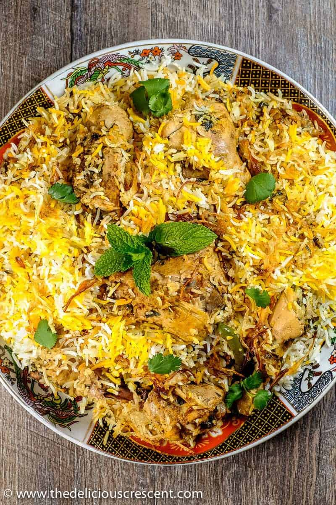

Biryani Types

- Hyderabadi Chicken Biryani
- Ambur Chicken Biryani
- Kolkata Chicken Biryani
- Lucknowi Chicken Biryani
Biryani Descriptions
- Aloo Biryani
- A flavorful biryani made with potatoes, rice, and aromatic spices.
- Hyderabadi Chicken Biryani
- A popular biryani variety from Hyderabad, featuring basmati rice and marinated chicken cooked with aromatic spices.
- Awadhi Mutton Biryani
- A rich and fragrant biryani preparation from the Awadh region, prepared with tender mutton and long-grain rice.
go to back